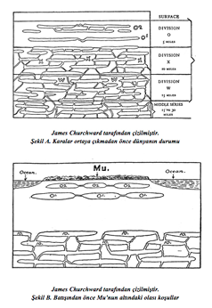
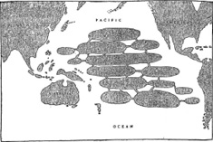
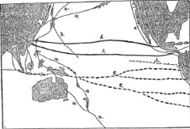

XIII. BÖLÜM
MU’NUN JEOLOJİK TARİHİ
Buraya kadar okuduktan sonra, Mu’nun jeolojik tarihini ve onun yıkımının bilimsel sebeplerini öğrenmek de faydalı olacak. Bu devasa kıtanın yeraltındaki temelinin altının volkanik gazlarla nasıl oyulduğunu belirtmiştim. Görünüşe bakılırsa, dünyanın kabuğunu meydana getiren temel kaya olan granite oyulmuş büyük hazne ve çukurlar vardı ve bunlar oldukça patlayıcı volkanik gazlarla doluydu. İçlerindeki gazlar dışarı çıktığında tavanları içeri doğru çöktü ve bunu doğal olarak üstlerindeki kayaların çöküşü takip etti.
Araştırmalarıma göre bu erken medeniyetin başına gelen felaket, kayaları taşıyan, aralarında küçük çatlak ve yarıklar bulunan odalardan oluşmuş ve üst katmanlarda yer alan yalıtılmış bir grubun boşalması sonucu meydana geldi. Okuyucuya üst, orta ve alt haznelerle yalıtılmış haznelerden bahsederken ne demek istediğimi açıklayabilmek için Arkeyan gaz

haznesi gruplarını gösteren bir resim ve açıklama hazırladım. Hazneleri belirtebilmek için onları gerçekte olduklarından daha yukarıda çizdim.
Arkeyan Gaz Haznelerinin Çizimi-Şekil A: Burada üst grubu ve alt grubun bir kısmını veriyorum. Her bölme yer seviyesinden belirli derinliklerde bulunan hazne gruplarını gösteriyor. Bu çizim, Mu Pasifik’in suları altında sonsuza dek kaybolmadan önce bu talihsiz kıtanın yüzeyinin altındaki durumun bir benzerini yansıtıyor. Üstteki grubun verilen derinliği 15 mil, orta grubun 30 mil ve alt grup ise 30 milden başlayıp dünyanın erimiş çekirdeğine kadar devam ediyor.
Üst grup üç bölüme (O, X ve W) ayrılmış durumda. O bölümü dünyanın yüzeyinden 5 mil derinliğe uzanıyor. Bu bölmedeki tüm hazneler yalıtılmış olarak gösterildi. “Yalıtılmış” derken kastettiğim; bu haznelerin alttaki haznelerle veya onları daha çok gazla doldurup, yüksek basınçla patlamalarına sebep verebilecek olan dünyanın merkeziyle hiçbir bağlantılarının olmadığı. Bu durumda içlerine yeni gazlar itilemez ve eğer fazladan gazlar bir şekilde içlerine sıkıştırılmazsa sonsuza dek şimdi oldukları gibi kalacaklar.
X bölümü dünya yüzeyinin altında 5 ile 10 mil derinlikler arasında yer alıyor. Bunlar canlı hazneler, W bölümünden sürekli taze gazlar alıyorlar ve bu gazlar hazneden hazneye, çatlak ve yarıklarla aktarılıyor.
Fazladan gazları O bölümünün yalıtılmış haznelerine itmek için volkanik faaliyetlerin öncelikle X bölümünün haznelerinden O1’e, sonra da O1’den O2’ye çatlak ve yarıklar açması gerekiyor.
Dünyanın merkeziyle bağlantılı olan W bölümünün haznelerinden gelen gazlar önce X’in haznelerine dolarak bunlarda fazla basınç yaratmalı. Bu sayede bu haznelerin tavanları yükselerek fazladan gazlar için yer açılmış olur.
Tavanlar yükseldiğinde bunları oluşturan kayalar çatlayıp ayrılarak X bölümünün gazlarının O1’e geçmesini sağlayacak geçitler oluşturur. Zamanla O1 haznelerindeki basınç yükselir. Bu da tavanlarının yükselmesine neden olur. Ardından O2 haznelerinin tavanlarının da gittikçe artan gaz basıncına ayak uydurmak için yükseltilmesi gerekir. Çatıları yukarı iterken ayıran ve delen gazlar bir yanardağ hâlinde hazneleri boşaltırken tavan artık haznede kalan gazlar tarafından taşınmaz hâle gelir. Sonuç ne olur? Haznelerin tavanları çökerken geride kalan gazlar devasa alevler hâlinde çöken toprakları kuşatır. Yüzey suları açılan büyük deliğe doğru akar ve toprak sulara gömülür.
Gaz kuşakları dünya yüzeyinin altında, belirsiz derinliklerde bulunur. Çeşitli olgular üzerinde yaptığım elli yıllık bir süreye yayılmış gözlemler sonucunda, gaz kuşaklarının genellikle orta grubun üst yarısı ve üst grubun alt hizası boyunca oluştuğu sonucuna vardım. Gaz kuşakları dünya yüzeyinin altında düzenli mesafeler hâlinde ilerlemiyor, daha önce de belirttiğim gibi kayda değer değişiklikler gösteriyor. Kollardan biri W bölümünün içinden geçebilir. Diğer bir kol ise X bölümünün içinden geçip tekrar W bölümüne dönebilir. Kuşaklar kısa mesafelerde dünya yüzeyinin birkaç mil yakınına kadar ulaşır. Bu durum genellikle kuşaklar güvenlik vanaları olan yanardağlara yaklaştığında görülür; tıpkı Hawaii, Ekvator, Orta Amerika ve başka bölgelerde olduğu gibi. 20 mil derinliğin altında hiçbir kuşağın bulunmadığını söylemek yanlış olmaz, derinlikleri çoğu zaman bundan daha azdır. Gözlemlerim bana, yanardağ yakınında olmadıklarında ortalama derinliklerinin 15-18 mil arasında değiştiğini söylüyor.
Şekil B: Bu, batışından önce Mu’nun temelinde yatan olası koşulları gösteriyor. Yalıtılmış haznelerden oluşan bir sıra Mu yüzeyinin çok yakınında bulunuyor ve haznelerdeki gazlar kıtayı ayakta tutuyordu. Bir sonraki gaz sırası oldukça derindeydi.
Şekil C (Sayfa 308): Burada, A ve B kesitlerindeki O2 hazneleri görülüyor. Bunlar birbirlerine çatlaklar ve geçitlerle bağlı.
fiekil D (Sayfa 308): Günümüzde Pasifik Okyanusu altında ve çevresinde uzanan başlıca gaz kuşaklarını gösteriyor.
Kuşakların şekillenmesi süresince Şekil B’de görülen IO haznelerindeki basıncın fazla artması, üstlerindeki kayaların çatlamasına ve yarılmasına neden oldu. Bunun ardından gazlar; O1 haznelerine girdi ve aynı durumun tekrarlanmasının ardından O2 haznelerine geçti. Bu gerçekleştiğinde O2 haznelerinin tavanlarında delikler açıldı ve gazlar dışarı kaçtı; toprak haznelerin tabanına çöktü ve Pasifik’in suları bölgenin üzerini kapattı. Mu artık yoktu.
Benim inanışıma göre Mu’yu ayakta tutan hazneler toprak yüzeyinin çok yakınındaydı. Bu görüşümü Pasifik Okyanusu’nun derinliklerine; Troano Elyazması, Codex Cortesianus ve Lhasa Belgesi’ne dayandırıyorum. Bu kayıtlardan hiçbiri toprağın Pasifik’e gömülmeden önce büyük bir yüksekliğe ulaştığından bahsetmiyor. Öte yandan, toprağın “dağılıp parçalara ayrıldığını”, “fırtınadaki bir ağacın yaprakları gibi titrediğini”, “okyanus dalgaları gibi kabarıp söndüğünü” ve “gece içinde sulara gömüldüğünü” anlatıyorlar. Tüm bunlar toprağın seviyesinde, haznelerin derinde bulunmaları durumunda yaşanacak türden büyük bir yükselmenin söz konusu olmadığına işaret ediyor. Kayıtların Mu’nun “iki kez kabardığını”, “iki kez temelinden savrulduğunu” söylediği düşünüldüğünde;

James Churchward tarafından çizilmiştir.
Şekil C. Batışından önce Mu’nun altındaki gaz haznelerinin olası konumları

James Churchward tarafından çizilmiştir.
Şekil D. Günümüzde Pasifik Okyanusu boyunca ve çevresinde uzanan gaz
kuşakları. 1. Büyük Merkezi Gaz Kuşağı. 2. Güney Pasifik Çapraz Kuşakları.
3. Japon-Mariana Kuşağı 4. Büyük Pasifik Çembersel Kuşağı.
Mu’yu destekleyen ilk sıranın altında, O1 ve O2’de görüldüğü gibi ikinci bir sıra olduğu sonucuna varılabilir. İlk yükselme gazlar IO’dan O1’e geçtiğinde, ikincisi ise O1 O2’ye daldığında gerçekleşmişti.
Mu’yu destekleyen haznelerin derinlerde değil de yüzeye yakın olduklarını kanıtlayan bir gerçek de şu: Eğer hazneler derinde olsalardı üzerlerinde, toprak sıradağlar gibi yükseltildikten sonra onu taşıyacak destek açıların oluşmasına yetecek kalınlıkta bir toprak tabakası bulunurdu.
Karalar ve kıtalar zamanın başından beri bu şekilde sulara gömülüyor. Kambriyen öncesi devirlerde, Paleozoik, Mezozoik ve Senozoik zamanlarda, Pleistosen Çağ’da ve hatta tarihimizin kıyısı kadar yakın zamanlara bile bu olayın örneklerine rastlıyoruz. Gaz haznelerinin ortadan kalkışı ve bunu takip eden toprak çökmeleri, temel kayaların yükseldikten sonra destek açılar oluşturabilecek kalınlığa erişmesine kadar sürdü. Bu sayede hazne sıralarıyla oluşan kuşaklar arasında devasa tüneller açıldı. Bu gaz kuşakları da şekillenip oluşumunu tamamladığında, toprağın bu yıkıcı batışının tam anlamıyla önüne geçilmiş oldu.
Mu’yu ayakta tutan gaz kuşaklarının; büyük merkezi gaz kuşağının Pasifik ayağı ile Pasifik çapraz kuşakları ve bunların kollarının oluşumu sırasında ortadan kalktığı jeolojik olarak kesin. Bazı jeolojik olguların varlığı sayesinde Mu’nun temelinde, Atlantis’in durumunda olduğu gibi, tek ve büyük bir gaz haznesi değil, bir hazne sırası olduğu sonucuna varıyorum. Bu inanışımı şu kanıtlara dayandırıyorum:
1. Pasifik Okyanusu’nda, farklı takımadalar arasında görülen derinlik farkı, her derinlik seviyesinde ayrı bir haznenin veya biri ortadan kalkmış üst üste iki haznenin varlığını gösteriyor. Eğer yalnızca bir hazne bulunsaydı, Pasifik Okyanusu’nun taban derinliği nispeten eşit olurdu.
2. Bazı adaların eskiden kıtanın bir parçası olduğunu görüyoruz. Eğer yalnızca bir hazne olsaydı bunlar suyun üzerinde kalamazdı.
3. Bu adalar haznelerin değil, hazneler arasındaki geçitlerin üzerinde bulunuyordu. Altlarında hazne bulunmadığı için bunlar suya gömülmedi.
4. Haznelerin bağlantılı olduğu adalardaki yanardağ faaliyetleri sayesinde görülüyor. Altlarındaki gazlar hazneden hazneye ilerlemişti. Bu doğal olarak adaların kenar hatlarını değiştirmiş, onları dağ benzeri, kesikli bir hâle sokmuştu.
Bu konudaki yorumlarım son elli yılda Pasifik’te rapor edilen yanardağ faaliyetlerinin dikkatli gözlem ve incelemesine dayanıyor. Adalar ve karakteristikleri de göz önüne alınmış durumda. İki ana kuşağın ve bunların kollarının var olduğu anlaşılıyor. Burada göstermediğim başka kolların varlığı yalnızca makul değil, muhtemel de. Ben var olduklarına inanıyorum ama onları belirlemeyi asla başaramadım.
Peki bu Mu’nun öyküsünü nasıl etkiliyor diye sormak mümkün. Eğer okuyucu geriye dönerse anımsayacaktır ki, Mu’nun yıkımını anlatan önceki bir bölümde bu tehlikeli gaz kuşaklarının insanoğlunun anayurdunun suyun altına, kavuran alevlerle dolu bir uçuruma batışına nasıl doğrudan sebep olduğu gösterilmişti. Mu ülkesinin diyagramda O2 olarak gösterilen, üst katmandaki yalıtılmış gaz hazneleri sırası tarafından ayakta tutulduğu konusunda hiçbir şüphem yok. Bu gaz hazneleri Mu’nun nihai katilleriydi.
Her haznenin kesin konumu, genişliği ve yüksekliği bilinmiyor. Adaların duruşuna dayanan tahminlerimle bu haznelerden bazılarının konumunu gösterdim. En ufak detayına kadar doğru olduklarını iddia etmiyorum ama bunlar Mu’nun altındaki kayaların oyuklu hâlini gösteriyor, Pasifik Okyanusu’nun birçok yerindeki sığ bölgeler ise bu haznelerin yüzeye yakın konumda bulunduklarını ortaya koyuyor.
Bu jeolojik bir teori olduğu için sıradaki adımım Polinezya Adaları’nda bulunan büyük, sönmüş yanardağlardan birkaçından bahsetmek olacak. Günümüze dek, dünya yüzeyinin hiçbir yerinde Polinezya’da bulunanlara denk yanardağ patlamalarının kanıtlarına rastlanmış değil. Bunların muazzam ağızları, dünya çekirdeğinin derinliklerinde sıkışıp, sonunda serbest kalarak dünya tarihinde benzerine rastlanmamış bir hiddetle patlayan kuvvetin bir kanıtı.
Kilauea, Hawaii Adaları’ndan birinde bulunan sönmüş bir yanardağ ve kraterini üç mil çapında. Böyle bir ağzın, sonuna kadar açılarak yıkıcı ateşini, duman ve lav kustuğunu hayal edin. Üç mil çapında bir ateş, duman ve lav seli. Bu ne yüksekliğe ulaşmıştı? Arkasındaki korkunç gücü düşünürsek, şüphesiz binlerce feete.
Kilauea’nın bu kadar korkutucu olmasına rağmen, muhtemelen ondan daha büyük olanlar da vardı. Şu gerçekler göz önüne alındığında bunun kesin olduğu ortaya çıkıyor: Gaz boşaltan haznenin büyüklüğü, hazneyi dolduran büyük miktardaki gaz, kuşağı oluşturan yüksek basınçlı gazların uyguladığı kuvvet ve üzerlerindeki toprağın, gazları kraterlere itip, Mu’yu boğazlayan yıkım iblislerini serbest bırakan ağırlığı.
Bu gerçekler göz önüne alındığında, Polinezya’daki sönmüş kraterlerin büyüklüğüne hayret etmek için çok fazla sebep yok. Hayret etmek için tek sebep kraterlerin varlığı olabilir. Toprağın altında işleyen böyle güçler söz konusuyken, insan toprağın neden yanardağlarla dama tahtası gibi bir görünüm kazanmak yerine muazzam bir patlamayla göğe savrulup toz bulutu gibi dağılmadığını merak ediyor.
Büyük merkezi gaz kuşağının Pasifik üzerindeki kuzey ana bölümü tamamlandığında, gaz kuşağının gelecekte bu bölgedeki birikmelerinin önüne geçmek için bir güvenlik vanası oluştu. Kilauea’nın merkezinde yeni bir krater açıldı. Halemaumau adı verilen bu yeni krater yalnızca 300 yarda çapında. Halemaumau’nun çapı, Kilauea’nın on sekizde biri olsa da günümüzün en büyük kraterleri arasında yer alıyor ve kıyasla, selefinin devasalığı hakkında bir fikir veriyor.
Büyük merkezi gaz kuşağının kuzey ana Pasifik bölümü Hawaii’nin tam altından geçiyor. Hawaii Adaları’nda yüzeye, dünyanın orta kısmını çevreleyen rotası üzerindeki diğer tüm noktalardan daha yakın. Niuafou arkeologlar için önem taşıyan bir diğer ünlü krater. Niuafou, Fiji Adaları’nın kuzeydoğusunda, Fiji ve Samoa’nın neredeyse tam ortasında bulunan bir ada üzerinde. Sönmüş Niuafou krateri iki mil çapında. Mu’nun batışında oynadığı rolden sonra sularla dolmuş ve şimdi bir göl oluşturuyor.
Yukarıda bahsi geçenler Polinezya Adaları’nda bulunan birçok devasa, sönmüş yanardağa yalnızca birer örnek. Dünya tarihinde, toprağın kapağını uçurup Mu’yu sulara gömen afetin öncesinde veya sonrasında, insanoğlunun başına bununla kıyaslanabilecek kadar korkunç bir yanardağ felaketi geldiğini zannetmiyorum.
Jeoloji bize Kuzey Amerika’nın batı kıyılarının geçmişte yükseldiğini söylüyor. Jeoloji hep arabayı atın önüne koşma hatasına düşüyor ve bu da aynı durumun bir örneği. Kuzey Amerika’nın batı kıyılarının yükselmesi değil, Pasifik Okyanusu’ndaki su seviyesinin düşmesi kıyı şeridini uzatmıştı.
Mu ülkesi Pasifik Okyanusu’nun neredeyse yarısını kaplayan devasa bir kıtaydı. Bazı bölgelerde okyanus binlerce feet aşağı indi. 5.000-6.000 mil uzunluğa, en az 2.000-3.000 mil genişliğe sahip bu muazzam deliği doldurup okyanusu şimdiki seviyesine getirebilmek için, çevredeki suların çekilmesi gerekti. Mu battıktan sonra Pasifik Okyanusu’nu başlangıçtaki seviyesine getirebilmek için, okyanusun tamamında bulunanın iki misli su gerekliydi. Bu, çevredeki bölgeler ve kıyılardan su çekmeden mümkün olmayacaktı ve bu gerçekleştikten sonra bile okyanusu asıl seviyesine yükseltmek için yeterli su yoktu. Mu, Pasifik Okyanusu’nda batan tek kara parçası değildi. Kuzeydeki devasa bir bölge ve batıdaki daha ufak bir bölüm de sulara gömülmüştü.
Şu sorulabilir: Nasıl oldu da Atlantik Okyanusu’nun suları Ümit Burnu etrafından Pasifik Okyanusu’na akarak, çevredeki kıyılardan su çekilmesine gerek bırakmadan su seviyesini dengelemedi? Buna cevaben söyleyebilirim ki, dünya tarihinin bu döneminde, batan kıtaların listesinin de göstereceği gibi, Atlantik Okyanusu’nun ilgilenmesi gereken kendi problemleri vardı: Pasifik Okyanusu’nda, binlerce mil uzunluğa ve genişliğe sahip Mu ülkesi.
Pasifik Okyanusu’nun kuzeyindeki, Amerika ile Asya’yı bağlayan Bering kara köprüsü. Bu köprü, jeolojinin anlattığı gibi dar bir kara şeridi değildi. Güney kıyı şeridi Aleut Adaları yoluyla Alaska’dan Kamçatka’ya uzanıyordu. Kuzey kıyısını belirlemeyi başarabilmiş değilim ama Arktik Okyanusu’nda yer alıyordu.
Bu batmış kara parçası, bilim insanlarına Amerika’da açıklayamadıkları her şeyi mâl edebilecekleri bir günah keçisi sağladı. Bilim insanlarının anlayamadıkları bir şey ortaya çıktığında -ki bu sık görülen bir durumdur- bunun Amerika’ya şüphesiz Bering kara köprüsüyle Asya’dan geldiğini konusunda kendi aralarında kolayca hemfikir olurlar. Açıklanamayanı açıklamak için neden Asya’nın seçildiği konusunda tek düşünebildiğimse, Doğu Asya hakkında hiçbir şey bilinmediği için çelişkiye düşme korkusu bulunmaması.
Bunların dışında Pasifik’te batan ufak kara parçaları var. Kaliforniya’dan Kolombiya’nın kuzeybatı ucuna uzanan bir kıyı şeridi sulara gömüldü. Anlaşıldığı kadarıyla bu dar bir şeritti. Şimdi Malezya Takımadaları’nın bulunduğu yerde de toprak batmıştı ama bu kara parçasının boyutları bilinmiyor.
Atlantis, Atlantik Okyanusu’nun ortasında bulunuyordu. Bu, devasa bir ada kıtaydı ve battığı devirde dünya uygarlığının merkeziydi. Ayrıca Atlantik Okyanusu’nun kuzeyinden Avrupa’ya uzanan kara bağlantısı vardı. Bu bağlantı, Amerika-Grönland, Grönland-Norveç arası topraklar ve batı kenarı İzlanda’dan Fransa’nın kuzeybatı ucundaki Finistere Burnu’na uzanan büyük, üçgen şekilli bir kara parçasından oluşuyordu. Orta Amerika kıyısı açıklarında da anakaraya bağlı küçük bir toprak parçası sulara gömüldü.
Bu batma olaylarının tümü, gaz kuşaklarının biçimlenmesi sırasında gerçekleşen volkanik etkinlikler sonucu meydana geldi. Büyük merkezi kuşak Mu ile Atlantis’in batmasına neden oldu. Pasifik çember kuşağı Bering kara köprüsünü, Appalachian-İzlanda-İskandinavya kuşağıysa Avrupa kara bağlantısını sulara gömdü. Okyanus seviyesinin düşmesiyle birçok toprak parçası suyun üzerine çıktı ve diğer karaların da kıyı şeritleri uzadı.
Görünüşe bakılırsa tüm bu büyük kara parçaları yoğun nüfusa sahipti, bu yüzden de can kaybı akıl almaz boyutlardaydı. Yalnızca Mu’da ölenlerin sayısı 64 milyondu.
Bu jeolojik döngü Mu hakkında sunulan tüm verileri doğruluyor ve kayıp halka olarak nitelendirilebilecek bağlantıyı sağlıyor. Pasifik Okyanusu’nda bulunmuş büyük, tarih öncesi bir kıtanın varlığını jeolojik açıdan şüpheye yer bırakmayacak biçimde kanıtlıyor. Pasifik Okyanusu adalarının günümüzdeki yükseltileri büyük oranda okyanus seviyesindeki düşmenin sonucu.
Dünyanın çapının gaz haznelerinin patlaması ve kayaların sıkışması sonucu ne kadar daraldığını gösterecek yaklaşık bir hesaplama yaptım ve sonucun 17-21 mil arası olduğunu gördüm.